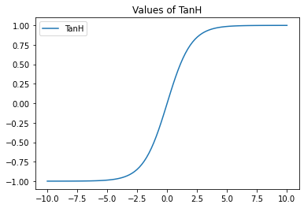
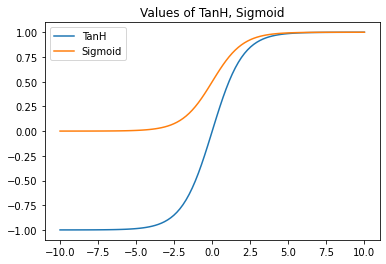

Relación entre la funcion Sigmoidea (logística o σ) y la Tangente Hiperbólica (TanH)
La función tanh (tangente hiperbólica) convierte cualquier valor al intervalo (−1,1).

Es una función geométrica; al igual que tan(x)=sen(x)cos(x), tanh se define a partir del coseno y seno hiperbólicos:
tanh(x)=senh(x)cosh(x)=ex+e−xex−e−x
De esta forma, por ejemplo, tenemos:
tanh(0)=1+11−1=20=0
tanh(1)=e+e−1e−e−1=3.082.35=0.76
tanh(−1)=e−1+ee−1−e=3.08−2.35=−0.76
Como vemos entonces, el balance de la función está en el valor 0, para el cual la salida es 0.5; valores mayores a 0 causan salidas mayores, y viceversa, y eso sucede de forma antisimétrica.
Vemos que en verdad es muy similar a la función Sigmoid. De hecho, con el siguiente gráfico podemos observar que TanH es simplemente Sigmoid multiplicada por dos (para convertir el rango (0,1) al rango (0,2)) y luego restarle 1 (para convertir el rango (0,2) al rango (−1,1)). Además, tenemos que multiplicar a x por 2, para que la curva de ambas sea igual:

Por eso, vamos a definir a tanh en base a Sigmoid:
tanh(x)=sigmoid(2x)∗2−1
Podemos probarlo también. Para eso primero nos será útil saber que:
Sigmoid(x)=1+e−x1=exex1+e−x1=ex+1ex=ex+1ex+1−1=ex+1ex+1−1+ex1=1−Sigmoid(−x)
Ahora si probemos que TanH(x)=2Sigmoid(x)−1
TanH(x)=ex+e−xex−e−x=exexex+e−xex−e−x=e2x+1e2x−1=ew+11−ew=1+e−w1−ew+1−1=1+e−w1+e−w−2=1+e−w1+e−w−1+ew2=1−2ew+11=1−2Sigmoid(w)=1−2(1−Sigmoid(−w))=1−2+2Sigmoid(−w))=2Sigmoid(−w)−1=2Sigmoid(−2x)−1Multiplicamos por 1 en forma de e−xe−x Multiplicamos por e−x num. y denom. Definimos w=2x (ya se parece sospechosamente a Sigmoid) Sumamos y restamos 1Separamos teˊrminos del numDefinicioˊn de SigmoidSigmoid(x)= 1-Sigmoid(1-x)distributivaw=2x